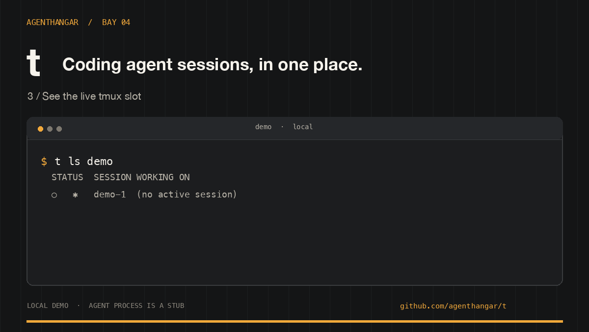

Hangar 01 · Open source · MIT
Ground crew for coding agents.
Tools to run, measure, and report on coding agents from your own machine. Self-hosted, reproducible, and with evidence behind every claim.
On the flight line
-
runtimebrief
Self-hosted project briefs from local repositories and coding-agent activity, with evidence for every claim.
View on GitHub → -
evals
Reproducible private benchmarks for choosing coding-agent configurations.
View on GitHub → -
dotfiles
Personal macOS and zsh setup: shell utilities, sync, sleep management, and PII scanning.
View on GitHub → -
t
Open coding-agent tasks in separate Git worktrees and tmux slots. Find, resume, and move sessions from one command.

View on GitHub →
Flight demo / t
One task. One worktree. One slot.
Keep the work in view.
t open starts an isolated worktree and tmux session. t ls shows the slot; t cd takes you to its files. This recording runs those commands with an idle agent stub.
- Evidence for every claim
- Briefs and benchmarks link back to the commits, sessions, and runs that produced them.
- Runs on your machine
- Self-hosted by default. Your repositories and agent logs never leave the hangar.
- MIT, always
- Every project ships under the MIT license. Fork it, wire it into your own setup, keep it.